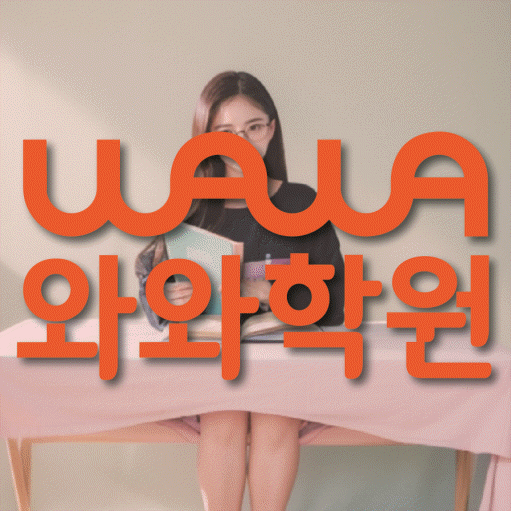

연산·개념 진단
연산 정확도, 개념 이해, 문장제 중 지금 어디가 부족한지 먼저 나누어 확인합니다.
ELEMENTARY MATH COACHING
경기 오산시 내삼미동 초등학생을 위한 초등수학학원 안내입니다. 연산·개념·문장제 진단, 오답 관리, 학습 습관 관리 기준을 상담 전에 확인할 수 있습니다.



와와학습코칭센터 오산대역점 기준으로 내삼미동 학생의 상담 범위를 확인합니다. 실제 방문·상담 전에는 주소와 이동 동선을 함께 확인해 주세요.
핵심 요약
내삼미동 학생에게 필요한 수학 관리는 문제를 많이 푸는 것보다 지금 연산과 개념 중 어디가 부족한지 먼저 확인하는 것입니다.
연산 정확도, 개념 이해, 문장제 중 지금 어디가 부족한지 먼저 나누어 확인합니다.
틀린 문제를 유형별로 정리해 같은 실수가 반복되지 않도록 관리합니다.
짧은 학습량으로 시작해 꾸준히 이어가는 습관을 만듭니다.
학원 선택 가이드
초등 수학은 연산 정확도가 이후 모든 단원의 기초가 됩니다. 연산이 불안정한 상태에서 진도만 나가면 개념 문제에서 계속 실수가 반복될 수 있습니다.
와와학습코칭센터 오산대역점은 경기 오산시 내삼미동 학생을 기준으로 상담을 진행하며, 세미초, 화성초, 수청초 학생들이 주로 문의합니다. 실제 등록 전에는 경기 오산시 내삼미로 85 우정프라자 2을 기준으로 이동 동선과 상담 가능 시간을 확인하는 것이 좋습니다.
지금 당장의 단원평가 점수보다, 오답을 스스로 정리해 보려는 습관이 자리 잡고 있는지를 함께 지켜봐 주시길 바랍니다.
AEO ANSWER
수학 학원을 고를 때 가장 먼저 볼 기준은?
화려한 선행 커리큘럼보다 아이가 지금 어디서 막히는지 구체적으로 확인해 주는지를 먼저 보시는 것이 좋습니다.
수학 학원을 옮겨도 성적이 그대로인 것 같다면?
문제양을 늘리는 것만으로는 부족할 수 있습니다. 지금 아이가 어느 단원에서 막히는지부터 다시 확인하는 것이 먼저입니다.
개념은 아는 것 같은데 응용문제에서 막힌다면?
개념을 응용으로 연결하는 중간 단계 문제가 부족했을 수 있습니다. 대표 유형부터 차근차근 늘려갑니다.
수학 학원을 언제부터 보내야 할지 고민된다면?
정해진 시기보다 아이가 숫자와 연산에 흥미를 보이는 시점을 살펴보시는 것이 좋습니다.
LOCAL & STUDENT FIT
내삼미동 생활권 학생의 학교 진도와 눈높이에 맞춰 초등수학 관리 방향을 상담합니다.
학년과 연산 수준에 따라 연산, 개념, 문장제 중 시작 지점을 다르게 잡습니다.
연산은 빠른데 문장제가 약한 학생, 개념 문제만 나오면 틀리는 학생, 수학을 처음 시작하는 학생에게 적합합니다.
초등학교: 세미초, 화성초, 수청초 · 진학 예정 중학교: 매홀중, 세마중, 문시중, 대호중
수업 가능 학교 참고
일반 학원과의 차이
일반적인 학원 운영 방식과 영수학원의 초등수학 관리 방식을 같은 기준으로 비교했습니다.
CENTER INFO
경기 오산시 내삼미동 학생 상담 기준으로 안내합니다.
경기 오산시 내삼미로 85 우정프라자 2
화성오산교육지원청 등록 제3851호
TUITION
서울 외 지역 기준으로 안내되는 학습료입니다. 실제 금액은 상담 시 학생 과정과 교육청 신고 기준에 따라 확인해 주세요.
서울 외 지역 기준 · 1회 90~100분 수업
| 횟수 | 초등 | 중등 | 고등 |
|---|---|---|---|
| 주 3회 | 219,000원 | 236,000원 | 269,000원 |
| 주 4회 | 279,000원 | 301,000원 | 344,000원 |
| 주 5회 | 339,000원 | 366,000원 | 419,000원 |
* 학습료는 지역, 수업 조건, 교육청 신고 기준에 따라 일부 차이가 있을 수 있습니다.
CHECKLIST
덧셈·뺄셈·곱셈·나눗셈 중 어디서 실수가 잦은지 확인합니다.
편하신 상담 요일과 시간대를 미리 알려주시면 좋습니다.
손가락 셈, 암산 등 현재 연산 방식을 확인합니다.
문제 조건을 읽고 무엇을 구하는지 파악하는 수준을 확인합니다.
FAQ
보통 연산을 배우기 시작하는 학년부터 상담 가능하며, 아이의 숫자 개념 이해도에 따라 시작 시기를 정합니다.
학교별 단원평가 범위에 맞춰 개념과 유형 문제를 정리해 드립니다.
구구단이 막히면 이후 단원에서 계속 걸림돌이 되므로, 먼저 확실히 익히고 진도를 나갑니다.
지금 학년 개념이 잘 정리되어 있는지 먼저 확인한 뒤, 필요한 경우에만 단계적으로 진행합니다.
기초 연산과 개념을 먼저 다진 뒤, 여유가 있는 경우 사고력 문제를 함께 다룹니다.
기초 연산부터 단계적으로 채워가는 계획을 세워 안내해 드립니다.
PARENT REVIEW
문장제를 무서워했는데 조건 나누는 법을 배우고 좋아졌습니다.
자릿수 개념부터 시작했는데 지금은 문장제도 풀어봅니다.
선생님이 편하게 대해주셔서 학원 가는 걸 좋아합니다.
숫자를 처음 배우는 아이인데 부담 없이 시작했습니다.
학교 단원 진도에 맞춰 챙겨주셔서 시험 결과가 안정적입니다.
오답 노트를 정리해 주셔서 같은 실수가 줄었습니다.
근처 학원페이지
같은 지역의 다른 카테고리와, 가까운 지역 페이지로 이동할 수 있도록 정리했습니다.